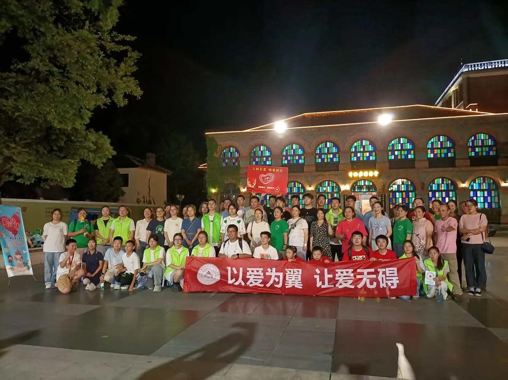
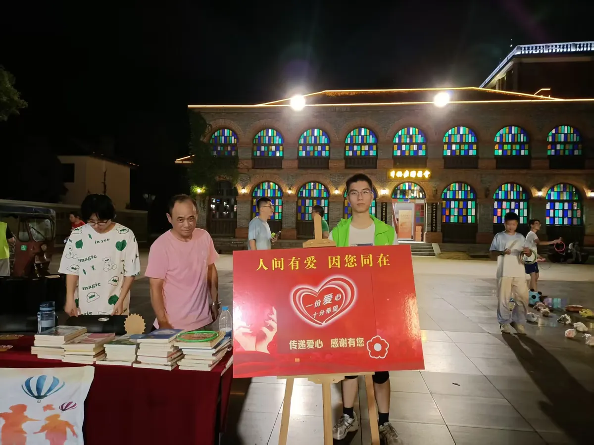
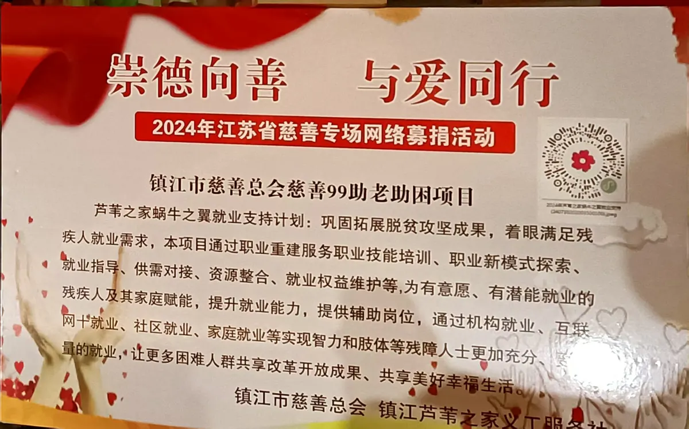
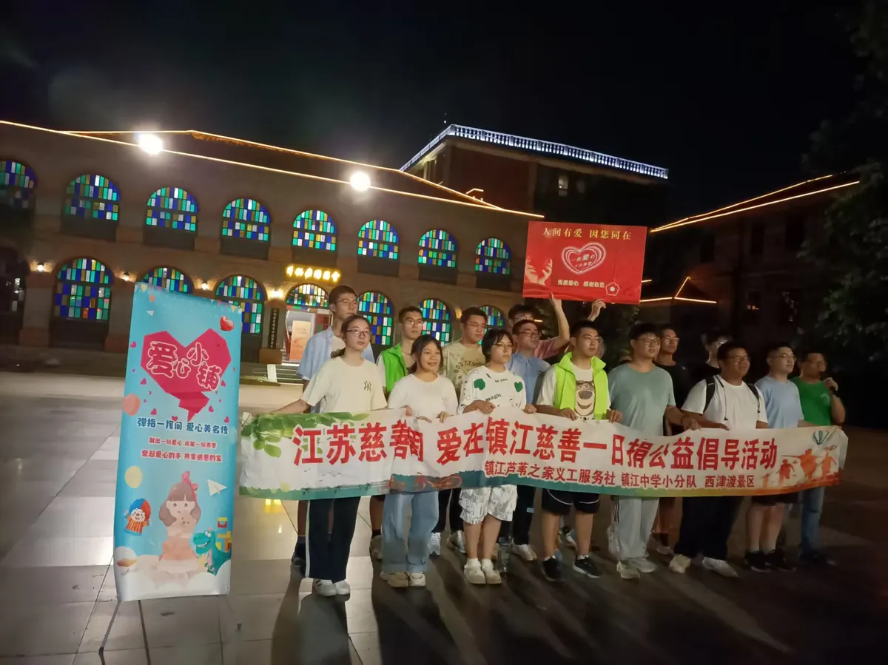

医学教我尊重复杂，代码让我练习拆解复杂。
我正在为临床医学打基础，也尝试用计算思维理解数据、系统和问题。比起急着定义交叉方向，我更愿意先把两边都学扎实。
+张鹏岳 / Zhang Pengyue
关于我：所学、所做，以及愿意长期投入的方向。
我正在为临床医学打基础，也尝试用计算思维理解数据、系统和问题。比起急着定义交叉方向，我更愿意先把两边都学扎实。
+江苏大学临床医学院
2026 年 9 月入学
使用 Python、C++ 和 JavaScript 学习与开发，在小型项目中练习系统设计、交互实现与持续迭代。
{ }慢一点没关系，重要的是一直向前。保持好奇，也保持稳定的学习节奏。
在规律运动中整理思绪、恢复专注，也为漫长的学习保留体力和耐心。
↗一次真实的参与，也是一堂关于沟通与责任的课。
SOCIAL PRACTICE / 2024.08.29
在镇江西津渡参加慈善一日捐志愿活动，协助介绍慈善募捐及助残、助老项目。与来往市民的沟通，让我对公益服务有了比文字更具体的认识。




瀑布流收录游戏作品：没有标准答案，只有不断发生的实验。
按机构筛选证书，点击卡片可查看本地高清原图。
从医学基础到代码实践，记录正在走的路。
临床医学 · 2026 级新生
高中毕业 · 劳动委员 · 三好学生
学研部 · 部员